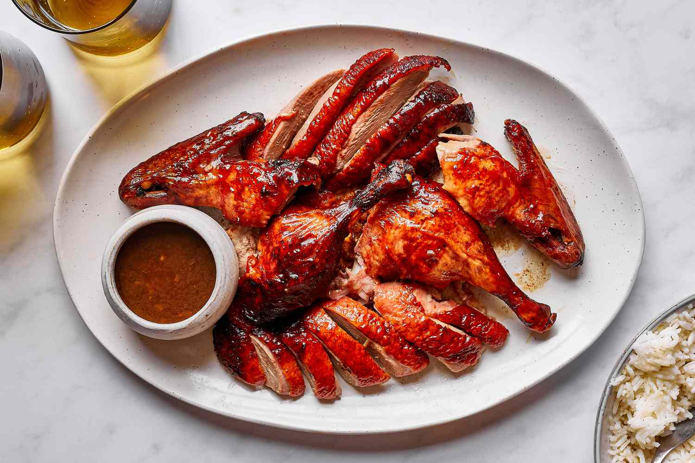
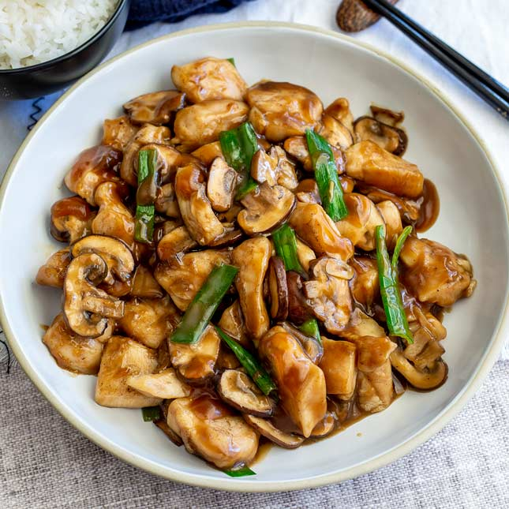
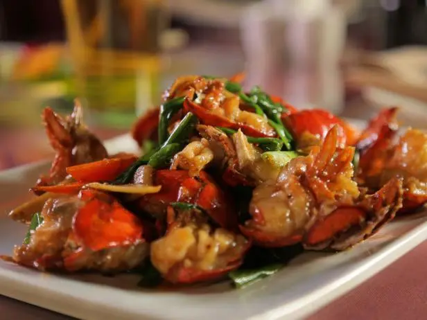
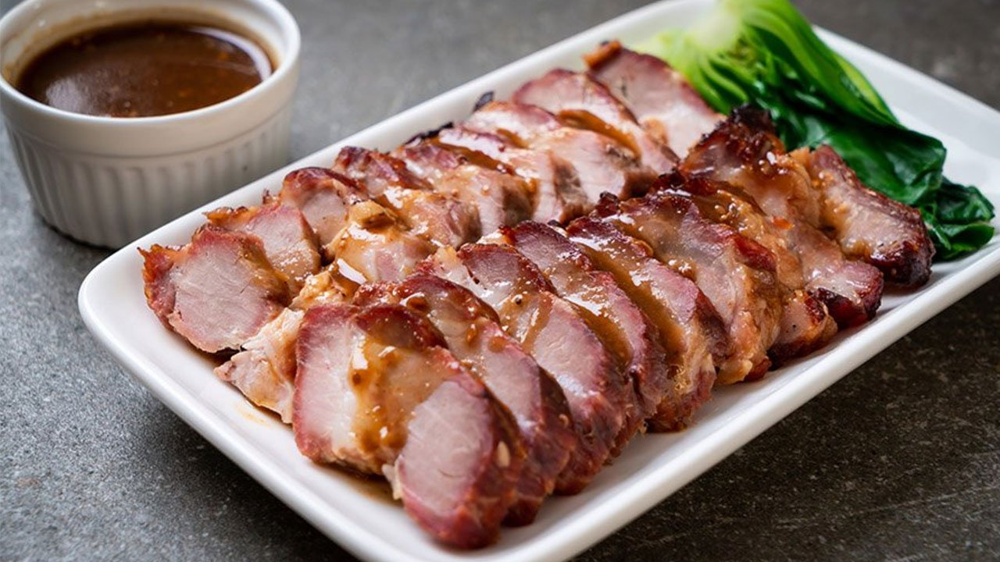

Known for its natural seafood and freshness of cuisine
---Roast Duck---
Roast Duck is roasted until the skin is crispy, with tender,
juicy meat and a subtly sweet glaze.

---Chicken and Mushrooms---
Fresh Mushrooms with Sliced Chicken is a light and savory stir-fry
featuring tender chicken and mushrooms in a delicious sauce.

---Lobster Cantonese---
Lobster Cantonese is a fresh lobster stir-fried with ginger, scallions,
and a savory soy-based sauce to highlight the seafood’s natural sweetness.

---Char Siu---
One of the most famous dishes, Char Siu, is a sweet and sticky barbecue
pork, marinated in honey, soy, and five-spice, then roasted to a caramelized finish.

---Sweet and Sour Pork---
Sweet and Sour Pork (Usualyl with Pineapple) is a crispy pork bites
tossed in a vibrant sweet-and-sour sauce with juicy pineapple chunks.